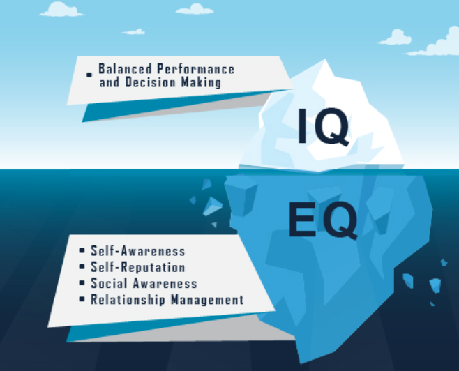

Emotional intelligence is having a real self awareness. Being able to understand your own emotions, to evaluate them in certain situations and to control and manage them. People with High EQ’s are able to work well with others as they can understand themselves and perceive others as well.
IQ is more about academic intelligence. Someone with a high IQ may be the smartest person in the room, but if they have a low EQ they may get angry and not understand why they did or their impact it can have on other people.
It’s important as it will mean you have a better life in general. You will be happier as you can be present and mindful in a moment. But it will also mean that you are probably better to work with, that you understand others as well as yourself.
